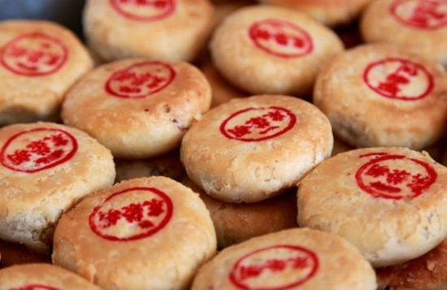

潮州的土特产品
潮州市是潮汕地区的组成之一，拥有悠久的历史，而潮州最为闻名的特产便是“潮州三宝”！
潮州三宝分别是老香橼，老药桔、黄皮鼓，是潮州凉果特产中的极品，在潮汕地区的凉果界中，具有举足轻重的地位，深受潮人的青睐并享誉海内外，故被誉为潮州三宝。
老香橼
老香橼又称老香黄、佛手果，是潮汕地区一种凉果，是潮州三宝之首，更是一种药膳类制品。
佛手柑
老香橼是以植物佛手柑为原料，经过盐腌、蒸晒、浸渍、复蒸晒、几腌几制等繁琐复杂的工作制作而成的。
老香橼作为潮州三宝之一，最备受潮汕人民青睐的便是它的药用价值，其具有消食去胀、腹胀厌食、开胃理气、止咳润肺、化痰生津、建脾、消风怯痰、降火清心等功效，还可治胃痛、腹胀、呕吐、嗝噎、痰多咳喘等疾病，能解酒舒气，且久藏不坏，愈久药效愈佳。
老药桔
老药桔是潮州凉果特产中的极品，远销海外。老药桔是以金桔的果实为原料，经特制而成的潮汕药用凉果。
老药桔气味浓郁诱人，咸中带甜。食用时将老药桔数枚捣烂放进杯中，冲进适当的水饮下，顿觉满口淳香，直沁肺腑，令人回气荡肠，有治肠胃病、呕吐及有益消化等功效。
黄皮鼓
黄皮鼓是选用优质大黄皮果为原料，取黄皮果去核盐渍、晒胚、蒸熟，加白糖、甘草末、香料，反复蒸晒而成，闻之果香扑鼻，入口微有嚼劲，甘酸浓郁，口齿留香。
黄皮豉具有消食健胃、驱风去瘀、止咳消痰、生津解渴、行气止痛等功效，因其富含阻高黄金素小檗碱，故辅有助降三高的作用。